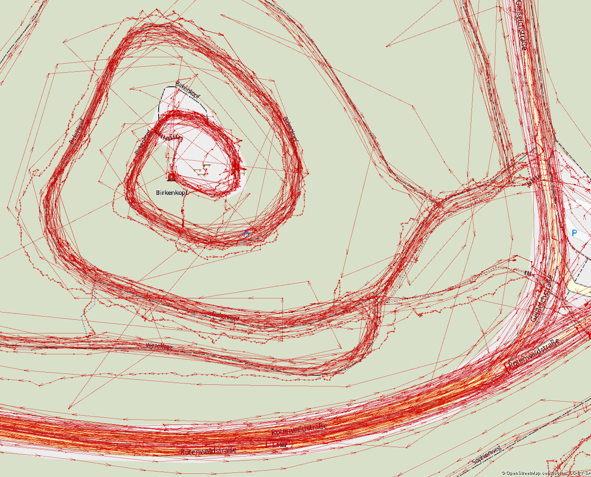
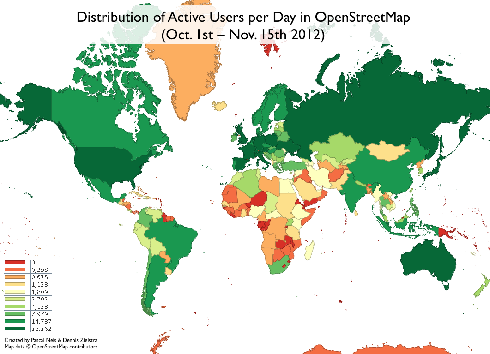
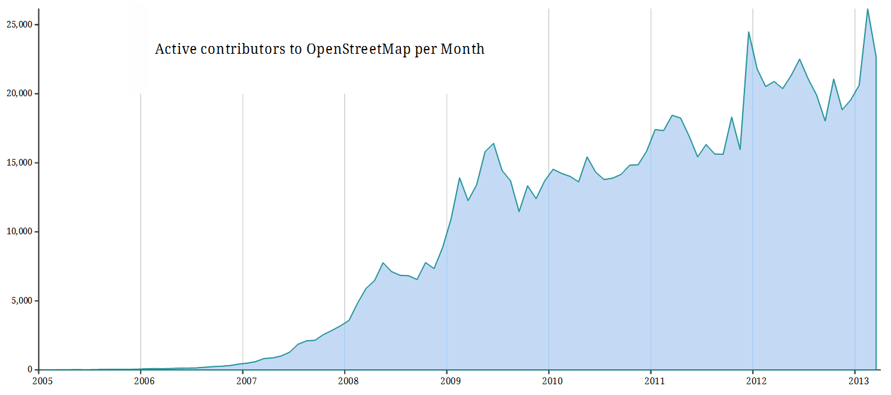
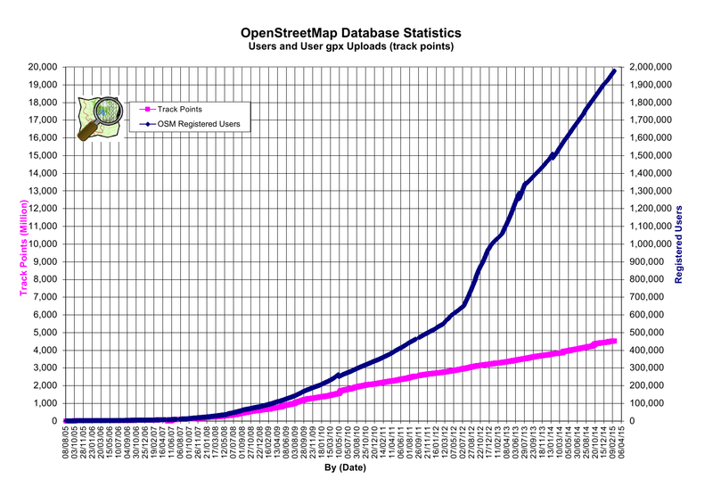

OpenStreetMap (OSM)
Slides unter https://github.com/runjak/CitizenScienceCourse/tree/master/osmTalk
Was will das Projekt erreichen?
- Freies, korrektes Kartenmaterial
- Freie, korrekte Metadaten
- www.openstreetmap.org/about
Was bisher geschah…
- OSM wurde 2004 von Steve Coast gegründet
- Initial starker Fokus auf das Vereinigte Königreich
- Ordnance Survey erhebt viele Daten, veröffentlicht diese aber kaum frei oder weiterverwertbar
- April 2006 wird die OpenStreetMap Foundation gegründet
Landesamt für Digitalisierung, Breitband und Vermessung Bayern
- 2009 Pilotprojekt mit Orthofotos der Oberpfalz
- 3 Monate Freiwilligenarbeit = 2 Personenjahre
- Seit Februar 2011 Luftbilder von ganz Bayern
Was machen die Citizen Scientists?
Sammeln von GPS traces
Beispiel trace
Arbeit mit Luftbildern
mit Luftbildern von Yahoo!
Softwareentwicklung
- Server/Website
- Suche, Geocoding
- Desktopeditoren, tools
- Anwendungssoftware für die Daten
Wie werden neue Teilnehmer gewonnen?
- Mapping parties
- Lokaler Kontext
- Anwendungsfälle
- Öffentliches Interesse
Wie werden Teilnehmer gebunden?
- Mapping parties/Lokale Communities
- State of the Map
- User diaries
Wer und was benutzt OSM?
- Dezember 2007 Oxford University
-
Kommerzialisierung von Google Maps
- Foursquare
- Craigslist
- Apple
- Unterschiedliche Navigationssysteme
Wo sind Teilnehmer?
Wie viele Teilnehmer?

Wie viele Teilnehmer?
Gibt es Superuser?
BeispielkartePotentieller Superuser
Gibt es Superuser?
Quellen:
- www.openstreetmap.org/about
- wiki.openstreetmap.org/wiki/What_is_OpenStreetMap?
- wiki.openstreetmap.org/wiki/Mapping_milestones
- wiki.openstreetmap.org/wiki/Stats
- neis-one.org/2012/11/active-users-osm-nov12/
- neis-one.org/2013/01/oooc/
- en.wikipedia.org/wiki/OpenStreetMap
- de.wikipedia.org/wiki/OpenStreetMap